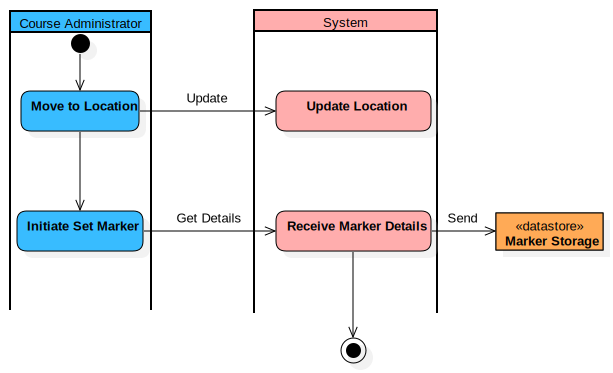

Set Marker Activity
UMLActivity
Aria Orienteering
::
Use Case Model
::
Set Marker Location
::
Set Marker Activity
Description
none
Diagrams

Set Marker Activity
Groups
Course Administrator
System Storage
Nodes
Move to Location
Update Location
Initiate Set Marker
Receive Marker Details
Marker Storage
InitialNode1
ActivityFinalNode1
Edges
(InitialNode1→Move to Location)
Update (Move to Location→Update Location)
(Move to Location→Initiate Set Marker)
Get Details (Initiate Set Marker→Receive Marker Details)
(Receive Marker Details→ActivityFinalNode1)
Send (Receive Marker Details→Marker Storage)
Properties
Name
Value
name
Set Marker Activity
stereotype
null
visibility
public
isReentrant
true
isReadOnly
false
isSingleExecution
false
Owned Elements
Set Marker Activity